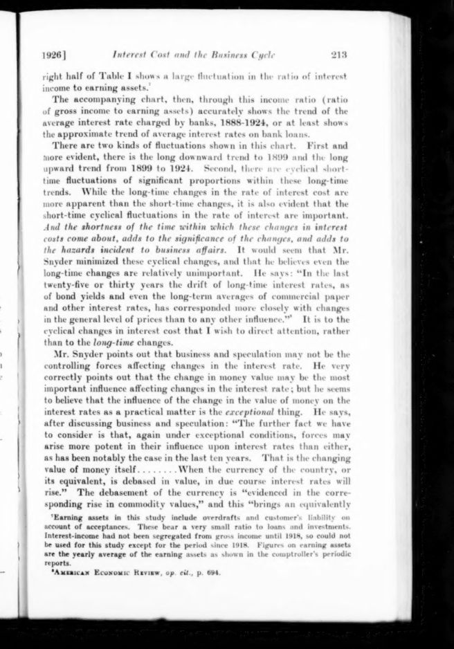

Orton e o cartel da borracha, Davenport e o mercado de fundos
Orton estuda o cartel britânico da borracha; Davenport explica os juros pelo mercado de fundos; Lewis rejeita o valor de empresa em funcionamento; Morgenstern escreve sobre Wieser.
Clássicos e debates da economia lidos no original e comentados em português, e as contas públicas de hoje com o documento oficial no rodapé. Por Renato W. Gomes, economista (CORECON-MS 1297).
Uma carta por semana, sem custo. Você sai quando quiser.
Orton estuda o cartel britânico da borracha; Davenport explica os juros pelo mercado de fundos; Lewis rejeita o valor de empresa em funcionamento; Morgenstern escreve sobre Wieser.
Hawley põe o empresário no centro da teoria; Frain mede o que a máquina fez com os vidreiros; Crum dosa a matemática da estatística; Winston testa se o comércio segue o dólar.

Preston analisa a lei bancária McFadden; Hayes defende que a renda da terra entra no preço; Anderson mede quem puxa o ciclo de 1919–1925; Fisher pergunta quem compra as ações dos empregados.

Na reunião de 1926, Fetter trata o juro como parte de todos os preços, quatro comunicações discutem holdings e publicidade das contas, e Slater mede o avanço do ônibus e do caminhão.

Kemmerer conta como assessorou dez governos; Tuttle define a função do empresário; Waltersdorf mede o valor de empresa em funcionamento; Hoover discute o imposto sobre herança.

Feis revê a teoria do ajuste do balanço de pagamentos; Tippetts narra o fim da guerra dos cheques ao par; Cole estuda as manias agrícolas; Clemen, rios e carne; Rowe, a isenção dos títulos públicos.

Blakey avalia a lei que cortou pela metade os impostos sobre grandes rendas e heranças; Cobb defende o método quantitativo; Graham separa salário alto e mecanização; Brissenden revê a economia do trabalho.

O manual de 1926 troca o estatuto por uma carta de incorporação, muda a secretaria para Evanston, cria novas classes de sócios, passa de oitocentos assinantes e registra Mises e Hayek em Viena.

Mitchell mede o peso dos juros no ciclo; Waltersdorf expõe as tarifas pelo custo do serviço; Heaton apresenta a economia australiana; Notz reconstrói os anos americanos de Friedrich List.

Na reunião de 1925, Hansen e Douglas medem o salário real, Black e Taylor discutem o êxodo rural, Taussig critica a tarifa flexível e Reed e Chandler debatem o Federal Reserve diante do ouro.

Young discute as causas econômicas da guerra; Wooster acha a origem da indústria no armazém da vila; Bickley trata de tarifas reguladas; Knight resenha Pigou e Wolfe, Cassel.

Um clássico comentado e uma análise com fonte primária, uma vez por semana. Sem custo e sem spam.
Seu e-mail é usado só para enviar a carta, e você sai quando quiser.